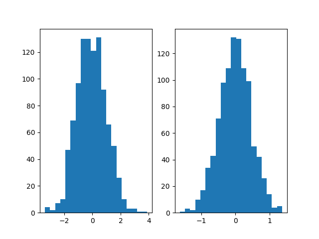
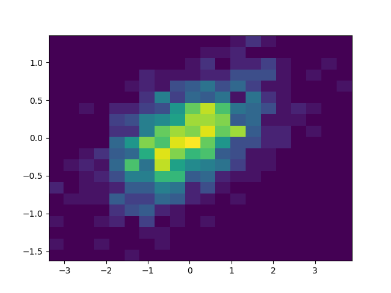

Note
Click here to download the full example code
A quick tour of pytma¶
We use the excellent sphinx-gallery to provide a visual tour of some of the features of pytma. sphinx-gallery renders html from regular python files. We find this to be much better than Jupyter for documentation of workflows and example code. We can keep better track of the evolution of the in git this way.
import numpy as np
import matplotlib.pyplot as plt
reStructuredText¶
The primary benefit of sphinx-gallery is that it allows you to interweave reStructuredText along with your regular python code. This means that you can include formatted text with the script, all using regular text files. rST has a particular structure it expects in order to render properly (it is what sphinx uses as well).
File headers and naming¶
Sphinx-gallery files must be initialized with a header like the one above. It must exist as a part of the triple-quotes docstring at the start of the file, and tells SG the title of the page. If you wish, you can include text that comes after the header, which will be rendered as a contextual bit of information.
In addition, if you want to render a file with sphinx-gallery, it must match the file naming structure that the gallery is configured to look for. By default, this is plot_*.py.
Interweaving code with text¶
Sphinx-gallery allows you to interweave code with your text. For example, if put a few lines of text below…
N = 1000
# They will be rendered as regular code. Note that now I am typing in a
# comment, because we've broken the chain of commented lines above.
x = np.random.randn(N)
# If we want to create another formatted block of text, we need to add a line
# of `#` spanning the whole line below. Like this:
Now we can once again have nicely formatted \(t_{e}\chi^t\)!
# Let's create our y-variable so we can make some plots
y = .2 * x + .4 * np.random.randn(N)
Plotting images¶
Sphinx-gallery captures the images generated by matplotlib. This means that we can plot things as normal, and these images will be grouped with the text block that the fall underneath. For example, we could plot these two variables and the image will be shown below:
fig, ax = plt.subplots()
ax.plot(x, y, 'o')
Multiple images¶
If we want multiple images, this is easy too. Sphinx-gallery will group everything together that’s within the latest text block.
fig, axs = plt.subplots(1, 2)
axs[0].hist(x, bins=20)
axs[1].hist(y, bins=20)
fig, ax = plt.subplots()
ax.hist2d(x, y, bins=20)
- 
- 
Other kinds of formatting¶
Remember, rST can do all kinds of other cool stuff. We can even do things like add references to other packages and insert images. Check out this guide for some sample rST code.

In the meantime, enjoy sphinx-gallery!
Total running time of the script: ( 0 minutes 0.495 seconds)